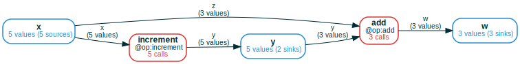
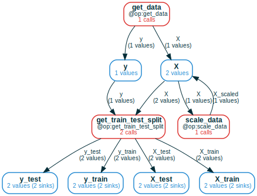
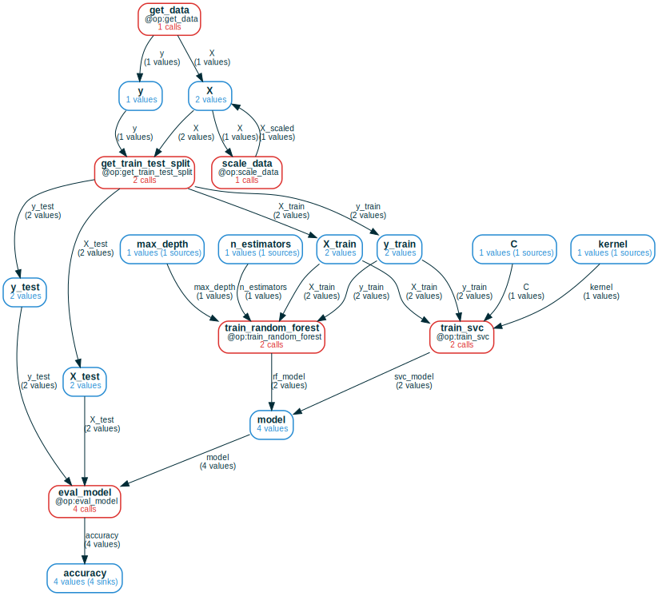
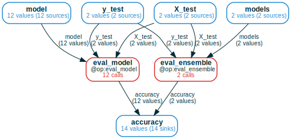
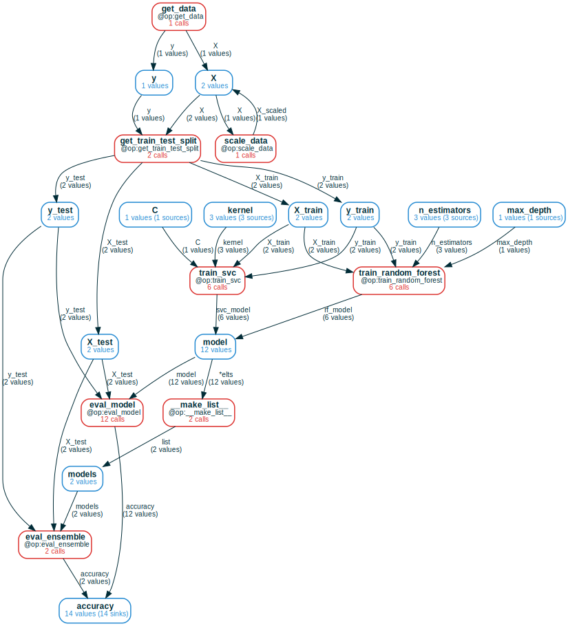

Tidy Computations

In data-driven fields, such as machine learning, a lot of effort is spent
organizing computational data — results of running programs — so
that it can be analyzed and manipulated. This blog post introduces the
ComputationFrame (CF) data structure — a synthesis of computation graphs
and relational databases — which provides a natural and simple grammar of
operations to eliminate this effort.
The main benefit of CFs is that they give a single view of heterogeneous computations that go beyond a fixed schema. They automatically represent in a familiar and intuitive way constructs like conditional execution, feedback loops, branching/merging pipelines, and aggregation/indexing using collections. This view can be declaratively queried for relationships between any variables in (literally) a single line of code, without leaving Python or writing in a domain-specific language like SQL.
ComputationFrame is implemented as part
of
mandala, a Python library for experiment
tracking and incremental computation. All examples in this post are ran using
the library.
So what's a ComputationFrame?
A ComputationFrame is a "generalized dataframe", where the set of columns is
replaced by a computation graph of variables and operations, and rows are
(possibly partial) executions of the graph.
Minimal interesting example
Below is a simple example of defining two Python functions (decorated via @op
from mandala), running some computations using them, and creating a CF from
the results.
# for Google Colab
try:
import google.colab
!pip install git+https://github.com/amakelov/mandala
except:
pass
from mandala.imports import *
@op(output_names=['y'])
def increment(x): return x + 1
@op(output_names=['w'])
def add(y, z): return y + z
# compose the operations
with Storage() as storage: # the `storage` automatically stores calls to `@op`s
for x in range(5):
y = increment(x)
if x % 2 == 0:
w = add(y=y, z=x)
# get a CF for just the `increment` operation
cf = storage.cf(increment)
# expand the CF to include the `add` operation
cf = cf.expand_forward()
# draw the CF
cf.draw(verbose=True, orientation='LR')
# convert the CF to a dataframe
print(cf.df().to_markdown())

| | x | increment | y | add | w |
|---:|----:|:----------------------------|----:|:----------------------|----:|
| 0 | 2 | Call(increment, hid=5dd...) | 3 | Call(add, hid=626...) | 5 |
| 1 | 4 | Call(increment, hid=adf...) | 5 | Call(add, hid=deb...) | 9 |
| 2 | 3 | Call(increment, hid=df2...) | 4 | | nan |
| 3 | 0 | Call(increment, hid=230...) | 1 | Call(add, hid=247...) | 1 |
| 4 | 1 | Call(increment, hid=6e2...) | 2 | | nan |
This small example illustrates the main components of the CF workflow:
- run some computations: we ran a computation by composing calls to
incrementandadd(which are automatically saved bymandalain a way that keeps track of how the calls compose). - create a CF and add desired context to it: we explored the computation by
starting from a CF containing all calls to
incrementand expanding it forward to add the downstream calls toadd. - convert to a dataframe for downstream analysis: we turned the expanded CF
into a dataframe, where the columns are the variables and operations in the
graph, and the rows are the executions of the graph — recorded as values
of variables and
Callobjects for operations.
When a given computation is partial, missing values and calls are represented by nulls in the dataframe, which allows for easy filtering and analysis.
Precise definition
Concretely, a ComputationFrame consists of:
- a directed computation graph of operations and variables, where each operation has multiple named inputs and outputs. The names of these inputs and outputs are the edge labels in the graph;
- a set of calls for each operation node, and a set of values for each variable
node. Details about how calls/values are distinguished are beyond the scope of
this post, but the key idea is that each call/value has a unique ID based on its
full computational history in terms of composition of
@opcalls; see here for more.
The only — but key — property this data must satisfy is that,
whenever input/output variables are connected to an operation node f, the
corresponding input/output values of all calls in f are found in these
variables.
Case studies
To illustrate the versatility of ComputationFrames and the grammar of
operations they support, let's now consider a fairly standard machine learning
pipeline as a running example.
The goal will be to train several kinds of machine learning models on the moons dataset from scikit-learn, and iterate on the pipeline by adding new preprocessing steps, models, hyperparameters and ensembling across model types. Here's some code to get us started:
from sklearn.datasets import make_moons
from sklearn.model_selection import train_test_split
from sklearn.preprocessing import StandardScaler
import numpy as np
np.random.seed(42)
@op(output_names=["X", "y"])
def get_data():
return make_moons(n_samples=1000, noise=0.3, random_state=42)
@op(output_names=["X_train", "X_test", "y_train", "y_test"])
def get_train_test_split(X, y):
return tuple(train_test_split(X, y, test_size=0.2, random_state=42))
@op(output_names=["X_scaled"])
def scale_data(X):
scaler = StandardScaler()
X = scaler.fit_transform(X)
return X
We begin by loading the dataset, optionally scaling it, and splitting it into training and test sets:
with Storage() as storage:
for scale in (True, False):
X, y = get_data()
if scale:
X = scale_data(X=X)
X_train, X_test, y_train, y_test = get_train_test_split(X=X, y=y)
In-place updates as cycles in the computation graph
When a variable in the program is updated in-place (like how X is
scaled in the above code) or feeds back on itself in a more complex way, it's
natural to represent this as a cycle in the high-level computation graph.
The CF expansion algorithm notices these cases by default. When we expand a CF
back starting from get_train_test_split, we see two values for X used as
inputs. When we keep expanding, we see that one of these values was actually
obtained from the other by applying the scale_data operation, so we add a
cycle to the graph:
cf = storage.cf(get_train_test_split).expand_back(recursive=True)
cf.draw(verbose=True, orientation='TB')

Note that the underlying low-level call graph that the CF represents is still
acyclic, because we distinguish between the value before and after the update.
This shows up in the dataframe representation as two rows, where only one of the
rows contains a call to scale_data:
| | get_data | scale_data | get_train_test_split |
|---:|:---------------------------|:-----------------------------|:---------------------------------------|
| 0 | Call(get_data, hid=73a...) | | Call(get_train_test_split, hid=7be...) |
| 1 | Call(get_data, hid=73a...) | Call(scale_data, hid=d6b...) | Call(get_train_test_split, hid=e0a...) |
Pipelines that branch and/or merge
Next, let's train and evaluate two kinds of models: an SVC (support vector
classifier) and a random forest. We then initialize a CF from the eval_model
function, and we call expand_back to trace back the full computation graph:
from sklearn.svm import SVC
from sklearn.ensemble import RandomForestClassifier
from sklearn.metrics import accuracy_score
@op(output_names=["svc_model"])
def train_svc(X_train, y_train, C: float = 1.0, kernel: str = "linear"):
model = SVC(C=C, kernel=kernel)
model.fit(X_train, y_train)
return model
@op(output_names=["rf_model"])
def train_random_forest(X_train, y_train, n_estimators: int = 5, max_depth: int = 5):
model = RandomForestClassifier(n_estimators=n_estimators, max_depth=max_depth)
model.fit(X_train, y_train)
return model
@op(output_names=["accuracy",])
def eval_model(model, X_test, y_test):
y_pred = model.predict(X_test)
acc = accuracy_score(y_test, y_pred)
return acc
with storage:
for scale in (True, False):
X, y = get_data()
if scale:
X = scale_data(X=X)
### new: training an SVC and a Random Forest
X_train, X_test, y_train, y_test = get_train_test_split(X=X, y=y)
svc_model = train_svc(X_train=X_train, y_train=y_train)
svc_acc = eval_model(model=svc_model, X_test=X_test, y_test=y_test)
rf_model = train_random_forest(X_train=X_train, y_train=y_train)
rf_acc = eval_model(model=rf_model, X_test=X_test, y_test=y_test)
cf = storage.cf(eval_model).expand_back(recursive=True)
cf.draw(verbose=True)

It's quite clear by looking at the CF's drawing what computations we did. As before, we can obtain a single dataframe that expresses the full computation, and we can select operations/variables of interest to analyze the results; for example, we see that random forest generally performs better than SVC on this dataset.
print(cf.df()[['accuracy', 'scale_data', 'train_svc', 'train_random_forest']].sort_values('accuracy', ascending=False).to_markdown())
| | accuracy | scale_data | train_svc | train_random_forest |
|---:|-----------:|:-----------------------------|:----------------------------|:--------------------------------------|
| 3 | 0.915 | Call(scale_data, hid=d6b...) | | Call(train_random_forest, hid=c42...) |
| 2 | 0.885 | | | Call(train_random_forest, hid=997...) |
| 0 | 0.82 | | Call(train_svc, hid=6a0...) | |
| 1 | 0.82 | Call(scale_data, hid=d6b...) | Call(train_svc, hid=7d9...) | |
So is this the full story of this dataset? We might want to investigate further by
- training more SVC and random forest models with different hyperparameters;
- ensembling different types of models to see if this improves performance.
We do this below by trying out more kernels for SVC and increasing the number of
trees in the random forest. Importantly, when defining the new eval_ensemble
operation, we type-annotate the models input using the custom MList type
constructor. This tells mandala to track each element of models as an
individual entity in the computation graph.
from typing import Any
@op(output_names=["accuracy"])
def eval_ensemble(models: MList[Any], X_test, y_test):
y_preds = [model.predict(X_test) for model in models]
y_pred = np.mean(y_preds, axis=0) > 0.5
acc = accuracy_score(y_test, y_pred)
return acc
with storage:
for scale in (True, False):
X, y = get_data()
if scale:
X = scale_data(X=X)
X_train, X_test, y_train, y_test = get_train_test_split(X=X, y=y)
svc_models = []
for kernel in ('linear', 'rbf', 'poly'): # new: trying different kernels
svc_model = train_svc(X_train=X_train, y_train=y_train, kernel=kernel)
svc_acc = eval_model(model=svc_model, X_test=X_test, y_test=y_test)
svc_models.append(svc_model)
rf_models = []
for n_estimators in (5, 10, 20): # new: trying different numbers of estimators
rf_model = train_random_forest(X_train=X_train, y_train=y_train, n_estimators=n_estimators)
rf_acc = eval_model(model=rf_model, X_test=X_test, y_test=y_test)
rf_models.append(rf_model)
### new: ensembling
ensemble_acc = eval_ensemble(models=svc_models + rf_models, X_test=X_test, y_test=y_test)
Tidy tools: merging ComputationFrames
To illustrate how CFs admit tidy tools — operations that take as input
computation frames and produce new ones — we'll use the | operator to
merge the CFs for eval_model and eval_ensemble.
Merging is similar to concatenation of dataframes: it takes the union of the
sets of values/calls at each node by matching the names of the operations and
variables between the two CFs. Because both our functions use the same names for
analogous inputs (X_test and y_test) and outputs (accuracy), this works
out nicely:

Operations that aggregate multiple results
As before, let's expand this CF back to see the full computation graph that leads to it:

Note the built-in __make_list__ operation which got automatically
added to the graph. This operation groups the items of the models list passed
to eval_ensemble into a single object, which is what's actually passed to
eval_ensemble in the expanded graph. __make_list__ is implemented the same
as any other operation, with (roughly) the following semantics:
elts_0, elts_1, ... are grouped
under the *elts-labeled edge, and are found in the model variable. This is
how CFs express the aggregation of multiple values into a single one.
How does .df() behave in the presence of such aggregation? We can take a look by
selecting enough columns to paint a complete picture of each branch of the
overall computation:
print(cf.df()[['n_estimators', 'kernel', 'accuracy', ]].sort_values('accuracy', ascending=False).to_markdown())
| | n_estimators | kernel | accuracy |
|---:|:-----------------------------|:-------------------------------------------|-----------:|
| 1 | | rbf | 0.915 |
| 4 | 5 | | 0.915 |
| 3 | | rbf | 0.91 |
| 0 | 20 | | 0.9 |
| 2 | 10 | | 0.9 |
| 6 | 20 | | 0.9 |
| 8 | 10 | | 0.9 |
| 7 | ValueCollection([20, 10, 5]) | ValueCollection(['linear', 'rbf', 'poly']) | 0.895 |
| 9 | ValueCollection([20, 10, 5]) | ValueCollection(['linear', 'rbf', 'poly']) | 0.895 |
| 12 | 5 | | 0.885 |
| 10 | | poly | 0.835 |
| 5 | | linear | 0.82 |
| 11 | | linear | 0.82 |
| 13 | | poly | 0.82 |
Columns where n_estimators is not null correspond to the random forest runs,
and similarly columns where kernel is not null correspond to the SVC runs.
But now we also get some columns containing a ValueCollection object, which is
the CF's way of distinguishing between depending on a single value of a variable
versus depending on a collection of values. This makes sense: the
eval_ensemble calls depend on multiple models, and in turn, on multiple values
in the n_estimators and kernel variables.
Conclusion, limitations & outlook
The CF visualizations are now getting out of hand, so it's a good time to wrap
up! We've seen how ComputationFrames make complex computations
"self-organizing", and how they provide a simple grammar of operations to
manipulate and analyze them. However, there is much other work in progress on
natural CF methods that we haven't touched on:
- ways to efficiently select and filter the data in the CF before converting it to a dataframe;
- operations for fine-grained control over the expansion of the CF, such as ways to explicitly merge/split nodes in the result, or options to expand only up to a certain depth, or whether/when to group calls to the same operation in a single node.
Another limitation is that, currently, ComputationFrames are not optimized for
large-scale computation graphs.
There's also much more to mandala than what we've covered here. For example,
the incremental computation features that mandala provides, which only
recompute @ops when the inputs and/or relevant code changes. If you're
interested in learning more, check out the mandala
documentation, and feel free to reach out
on Twitter.
Why "tidy"? And some other related work
Tidy data vs tidy computations
In many ways, the ideas here are a re-imagining of Hadley Wickham's Tidy Data in the context of computational data management. In particular, the focus is on computations built from repeated calls to the same set of functions composed in various ways, which is a common pattern in machine learning and scientific computing. In analogy with the tidy data philosophy, the goal of "tidy computations" is to eliminate the code and effort required to organize computations, so that only the code to compute and analyze the results remains.
Despite the different setups — data cleaning versus computation tracking — there are many similarities between the two approaches. This is because in an abstract sense you can think of "data" as a kind of "computation" that nature has performed via some "data-generating process". The difference stems from this process typically being unknown, hidden or otherwise hard to model. Perhaps this is also why the tidy data paper spends some time talking about notions of functional dependencies and normal forms, which are also relevant to computations. In fact, tidy data is in Codd's third normal form, which is in turn a more relaxed version of the Boyce-Codd normal form (BCNF). The BCNF is automatically satisfied by operation nodes in a computation frame when viewed as relations.
On the one hand, the explicit knowledge of the data generating process makes the job of computation tracking easier in an ontological sense. Wickham remarks that, while easy to disambiguate in concrete examples, the concepts of "variable" and "observation" are actually hard to define abstractly. Not so for computations: variables are inputs/outputs of functions, and observations are function calls.
But on the other hand, this detailed knowledge also gives us more complex situations to handle, such as feedback loops, branching pipelines, and aggregation/decomposition to name a few. This means we need more expressive tools and grammars to handle these situations. Furthermore, even if functions impose a notion of variables and observations, this does not prevent one from designing function interfaces poorly, which can in turn lead to messy computations.
Graphs, databases, categories
There's a rich history of work in relational databases and graph databases, and CFs share some similarities with both:
- A CF can be seen as a relational database, with a table for each operation and each variable. The operation tables have columns labeled by the inputs/outputs of the operation, and the values in these columns are pointers to the corresponding input/output values, which are stored in the (single-column) variable tables.
- The
.df()method works by performing an outer join operation (in a specific order) on the tables containing the full computational history of all final values in the CF. - Similarly, a CF can be seen as a graph database, where the nodes are calls and values, and the variables and operations serve as "node types".
- Correspondingly, some operations, such as expansion or finding the dependencies/dependents of some nodes/values can be seen as graph traversal operations.
Finally, the CF data structure can be seen as a kind of "functor" from a finite category (roughly speaking the call graph) to the category of sets. Some consequences of this perspective — which combines graphs and databases — are presented e.g. in this paper